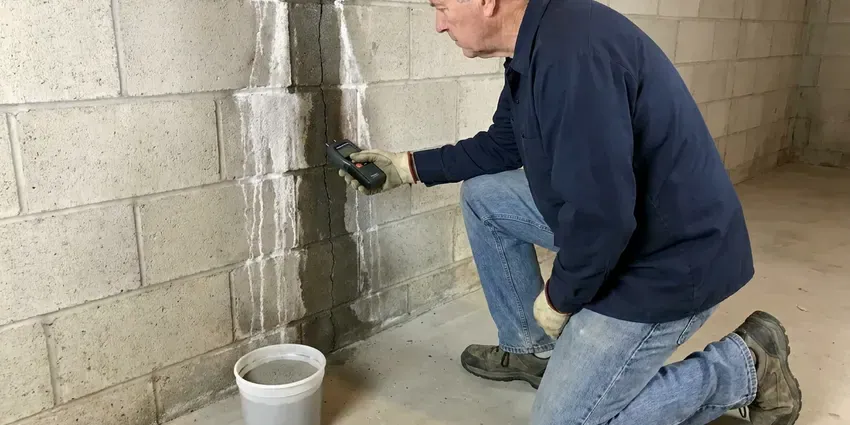

Emergency Plumber in Pike Creek, DE
Sewage in the tub or gas smell near the water heater in Pike Creek, DE? Those calls go to the front of our line.
- Written Workmanship Warranty
- First-Visit Repairs
- Licensed, Insured Plumbers
- Price Before Work Starts

Get the Leak Stopped Tonight in Pike Creek, DE
A dispatcher answers, helps you find the main shutoff and sends the nearest plumber.
Burst Pipes, Backups and Water Heater Failures in Pike Creek, DE
GNV Plumbing sends licensed plumbers, not helpers, on night calls in Pike Creek, DE. A good emergency visit is mostly diagnosis. Our tech checks the meter, isolates the failed branch and looks at the valve or fitting that let go, because a patch over the wrong problem just brings you a second call.
Work we handle every week:
- Cable machine and jetter drain clearing
- Electronic leak location before any cutting
- Slab leak isolation

Additional Plumbing Maintenance Services in Pike Creek, DE
Our maintenance and specialty plumbing services in Pike Creek, DE catch small problems before they become emergencies.


Customers
Why Choose GNV Plumbing for Emergency Plumber in Pike Creek, DE?
People worry about late-night pricing. We give you the dispatch fee before the truck leaves and the full repair price before the plumber starts, and that number holds unless you approve a change. You decide whether a fix happens tonight or waits for regular hours.
- Delaware Licensed, Our plumbers hold licenses in Delaware and work to the plumbing and fuel gas codes your city enforces.
- Price Up Front, You hear the dispatch fee on the phone and see the repair price before work begins.
- Live Answering, A real person picks up day or night and helps you close the main while the truck heads out.
Citywide Coverage
Our emergency trucks cover every part of Pike Creek, from older blocks with galvanized pipe to new subdivisions plumbed in PEX. The nearest truck gets the call. We give a real arrival window, even when calls stack up.
Experienced Team
Ours explain things in plain words. They show you the failed part, explain what caused it, and quote the fix in writing before starting, even at 2 a.m. when you just want it done.
Safety-First Approach
On water heater calls we check the relief valve, the vent draft and the gas connection, not just the part that failed. Blocked vents can be deadly. We test for spillage before leaving a gas unit running.
Trusted Certified Pike Creek Plumbing Services Professionals
At GNV Plumbing, we take pride in licensed, certified plumbing services throughout Pike Creek, DE. Credentials matter in this trade. Every repair, install and maintenance visit follows strict safety and quality rules, and the plumbers doing the work carry recognized industry credentials.
Call Us Now PHCC Plumbing Contractor Recognition
PHCC Plumbing Contractor Recognition Better Business Bureau (BBB) Accreditation
Better Business Bureau (BBB) Accreditation Angi Certified Pro
Angi Certified Pro ISO 9001 Quality Management Certification
ISO 9001 Quality Management CertificationTypical Plumbing Emergencies in Pike Creek, DE
Severe Drain Clog Clearing in Pike Creek, DE
Grease, wipes and scale are behind most of the drain emergencies we see. Dishwasher backups are usually branch clogs. Water rising in the tub when the toilet flushes points to the main line, which calls for a cable machine run from the cleanout. After clearing it, we flush the line and camera it if the clog is a repeat.

Slab Leak Detection and Repair in Pike Creek, DE
A warm patch on a tile floor or a meter that turns with every fixture off tends to mean a leak below the concrete. Older homes in the north often have basements, while many newer and coastal homes sit on slabs or raised foundations. We close the hot or cold side to stop the loss, then pinpoint the spot with an acoustic listener and a thermal camera, which keeps the concrete cut to a single small opening. Repair can be a spot fix through the slab or a reroute overhead. You choose once you see both quotes.
Emergency Slab Leak Response in Pike Creek, DE
The sound of running water with everything off is a textbook slab leak symptom. So is a hot spot on the floor. We isolate the hot or cold side first, which keeps some water running for the night, then locate the leak with acoustic and thermal gear. Repairs include a direct cut through the slab, a reroute through the walls or attic, or a partial repipe of that branch.
Emergency Plumbing for Rentals and Businesses in Pike Creek
A burst line in a second-floor apartment soaks the unit underneath quickly. We respond after hours and on weekends to rentals, offices and restaurants, including multi-unit supply risers, grease lines and commercial water heaters. Managers can set up a direct account. Dispatch then has your unit notes, shutoff locations and approval limits on file.
Commercial Emergency Plumbing in Pike Creek, DE
A restaurant with a backed-up floor drain at 6 p.m. on a Friday is losing money by the minute. We clear grease lines with jetters, repair burst branches in offices and get commercial water heaters firing again, working around your hours when the space is occupied. Health code matters here. The goal is reopening that night.
After-Hours Commercial Plumbing in Pike Creek
Every office, shop and apartment building loses money when the water stops in Pike Creek. We run after-hours calls for burst branches, failed commercial water heaters and backflow assemblies that dump water. We see grease line clogs often. Property managers can set up an account so dispatch already has the building notes, and that cuts minutes off a middle-of-the-night call.
Gas Line Leak Repair in Pike Creek
Rotten-egg smell near the range or a hiss by the water heater means leave the house now. Do not flip switches. From the yard, call 911 or the gas utility, then call us once they clear the scene, and our certified plumber will find the leak with a combustible gas detector, replace the bad section and pressure test the line to code before any appliance gets relit.

Main Line Emergencies in Pike Creek
Gurgling toilets and a slow tub together usually mean the main is closing up. Roots, grease and broken clay or cast iron are the usual suspects. We clear the line from the cleanout with a cable machine or jetter, then camera it, so you see repair options for any broken pipe before we leave. You get answers that day.
A 24/7 Plumber Close to You in Pike Creek, DE
Local also means we know which Pike Creek neighborhoods have cleanouts hidden under landscaping and which ones have meters in the alley. Small things like that save a lot of time. Finding shutoffs goes quicker.
Searching for an emergency plumber near me in Pike Creek at night usually turns up call centers that sell your lead. GNV Plumbing dispatches our own plumbers. You talk to the company doing the work.
GNV Plumbing at a Glance
- Fully licensed plumbing team covering Pike Creek, DE
- 24/7 emergency service with same-day scheduling
- Upfront, flat-rate pricing before work begins
- 4.8-star rated by 849+ Delaware customers
Pike Creek Map
Pike Creek Information
- Population
- 7,808
- Area codes
- Local
- Service area
- Pike Creek and towns within a 40 mile drive
- Nearby
- Pike Creek Valley, North Star, Hockessin, Elsmere
A hard freeze splits pipe in exterior walls and crawl spaces, and the leak usually shows up when the line thaws. In Pike Creek, DE, calling early keeps the drywall and insulation losses small. Hard freezes are usually short here, but a single cold night can still split an outdoor faucet left connected to a hose.
Expert Services
Call GNV Plumbing for reliable plumbing work done by licensed pros in Pike Creek, DE.
Our Specialized Plumbing Services in Pike Creek, DE
At GNV Plumbing, we handle the full list of plumbing services across Pike Creek, DE. From leak detection to full system installs, our team works fast and charges fair prices on homes and commercial properties alike. Here are the core services we offer:


How We Run an Emergency Call in Pike Creek, DE
An emergency call with us has three parts: make it safe, find the cause, fix it right.
Call and Shut Off
Call (302) 406-6354. The dispatcher helps you close the main and confirms the emergency rate.
Truck on the Way
We send the closest licensed plumber to your Pike Creek home with a stocked truck and an arrival window.
Diagnose and Price
Our plumber locates what failed and gives you a price before starting.
Frequently Asked Questions About Emergency Plumber in Pike Creek
That depends on the failed part. A toilet clog or a leaking supply connector is a small job, while a burst pipe inside a finished wall or a main line backup can run $500 to $1,500 or more when walls have to open. You get the price before work starts.
Most of them, yes. We work on Rheem, AO Smith, Bradford White, State, Rinnai and Navien. Our trucks stock the usual thermocouples, elements and valves, and same-day replacement is often possible when a tank has rusted through or the unit is past repair.
We can stop it the same night. The plumber isolates the leaking side so you keep some water, and a permanent repair or reroute may get scheduled for the next day if it needs more time.
Absolutely. GNV Plumbing clears commercial grease lines, repairs burst branches and gets commercial water heaters running again across Pike Creek, working nights so you can open in the morning.
Close the main water valve. It is usually near the front of the house or in a meter box by the street. Turn off the water heater if it is leaking, and keep pets and kids away while you move anything valuable out of the wet area.
For faucets and valves we use Moen, Delta and Kohler. Water heaters are typically Rheem or AO Smith, and the sump pumps we install are usually Zoeller units with cast iron housings. We pick parts with long track records.
Closing the water and plunging a toilet are reasonable first steps. Cutting pipe, opening a gas line or draining a hot tank can make things worse, and the dispatcher can talk you through the safe steps while we drive.
Anything that is damaging the house right now or makes the plumbing unusable. That includes sewage backups and burst pipes. So does a toilet that will not stop overflowing after a flush, a gas smell, or a total loss of water.
Hear From Customers Who Hired Our Plumbing Experts

Patricia H.
We had a slab leak that two other companies could not find. GNV Plumbing located it in under an hour with a listening device. They rerouted the line through the attic instead of breaking up the floor, so we kept our kitchen tile.
Slab Leak Repair · Pike Creek, DE
Megan L.
Our upstairs tub drained so slowly that every shower turned into a bath. GNV Plumbing pulled a wad of hair out of the stopper and then snaked the line past the trap. Three months later it still drains fast.
Drain Cleaning · Pike Creek, DE
Nathan E.
Our tankless heater kept throwing an error code and shutting off mid shower. The tech flushed the heat exchanger, which was full of scale, and replaced a bad flow sensor. Hot water has been steady for half a year now.
Water Heater Repair · North Star, DE
Mark T.
The floor drain in our office break room backed up every few weeks. The plumber ran a cable, then put a camera down and found roots at a joint about thirty feet out. Seeing it on the screen made the decision easy.
Drain Cleaning · Pike Creek Valley, DE
James P.
Our restaurant had a slow leak at the hand sink that was rotting the cabinet base. GNV Plumbing came in at six in the morning before prep, replaced the trap and both supply lines, and was packed up before my first cook clocked in.
Commercial Plumbing · North Star, DETyler J.
We bought a taller comfort height toilet for my dad, who just had knee surgery. The plumber pulled the old one, found the flange was cracked, and replaced it before setting the new bowl. Took about two hours.
Toilet Installation · Newark, DE